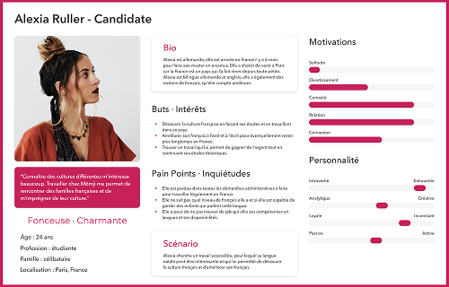
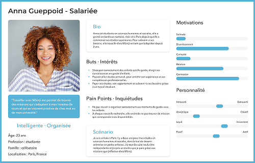
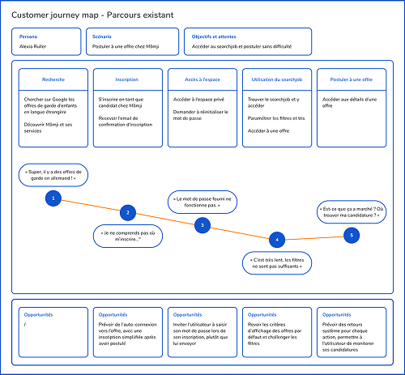

Un espace pensé pour une génération mobile.
Chez Mômji, les babysitters sont majoritairement de jeunes étudiants — hyper-connectés et habitués à tout gérer depuis leur smartphone. Leur espace privé, à l'inverse, est accessible en desktop uniquement et a des fonctionnalités vieillissantes. Résultat : pour signer un contrat, accéder à des documents, ils doivent contacter les équipes. Une friction qui coûte du temps à tout le monde.
- 01Permettre aux candidats de naviguer sur leur espace depuis leur smartphone
- 02Désengorger les équipes support et recrutement
- 03Améliorer le taux de transformation (avec plus de candidatures)
Discovery
Questionnaire en ligne
Envoi d'un questionnaire aux candidats et aux salariés babysitters. Les réponses ont mis en évidence plusieurs insights majeurs :
Observation contextuelle
Observation de plusieurs sessions de Matching on the spot (présentation de l'espace privé faite par un recruteur à un candidat). Quelques insights intéressants :
Personas
Réalisation de deux personas avec les informations recueillies grâce au questionnaire et à l'observation du MOTS :


Experience journey map
Modélisation de la customer journey map de Alexia :

Idéation
How might we
Définition des énoncés HMW avec l'équipe, basée sur les informations que nous avons recueillies :
Benchmark fonctionnel
Analyse de 4 plateformes pour identifier les bonnes pratiques sur l'espace candidat, la navigation et l'accès aux offres :
- Inscription simple et guidée, CTA "100% gratuit" rassurant
- Dashboard complet : profil, jobs, favoris, parrainage, aide
- Vue liste + carte pour les offres, avec filtres détaillés (type, âge, planning)
- Fiches de paie visibles mais inaccessibles sans contrat actif
Retenu : Le parrainage intégré à l'espace privé crée un vrai avantage de fidélisation.
- Page d'accueil orientée clients, entrée candidats peu visible
- Inscription très longue — trop de champs décourage les candidats
- Modifier ses critères de recherche oblige à repasser par le questionnaire d'inscription
- Emails de bienvenue clairs avec étapes à compléter
Retenu : Les emails onboarding avec étapes visuelles aident à guider le candidat dès l'inscription.
- Page d'accueil dédiée aux candidats, champ de recherche immédiat
- Espace privé bloqué tant que le CV n'est pas uploadé
- Inscription en 2 temps : rapide d'abord, puis complétion du profil
- Pas d'espace documents ni fiches de paie
Retenu : L'inscription progressive (infos essentielles d'abord) réduit la friction initiale.
- Accès aux offres possible avant même l'inscription
- Formulaire d'inscription court et agréable
- Espace candidat validé uniquement après entretien — crée de l'attente
- Emails de confirmation mal formulés, confusion candidature vs inscription
Retenu : Permettre de consulter les offres avant inscription réduit l'hésitation à créer un compte.
Design
Décisions clés
Prototype high-fidelity
Livraison et évaluation
Trois mois après le lancement, les résultats confirment les objectifs visés : davantage de candidatures depuis mobile, et surtout un réel désengorgement des équipes support et recrutement.
de taux de candidature sur mobile
de contacts support liés aux documents et contrats
des contrats signés en ligne par l'intervenant
Les difficultés rencontrées
Pour clarifier le parcours et les tâches à réaliser par l'utilisateur (candidat, salarié), il a fallu comprendre toutes les étapes par statut — d'autant que différentes équipes et interlocuteurs étaient concernés.
Le fait de concevoir une interface et une navigation qui servent différents profils sans créer de confusion a demandé plusieurs itérations sur l'arborescence.
La base de code vieillissante et fragmentée a rendu la conception compliquée car certaines options n'étaient pas réalisables et devaient être adaptées.
Ce que j'ai appris
Travailler sur un produit qui a une grande dette technique m'a appris à concevoir sous contrainte. Beaucoup d'idées ont dû être abandonnées ou simplifiées non pas parce qu'elles n'étaient pas pertinentes, mais parce que le socle technique ne le permettait pas. J'ai compris que le rôle du designer n'est pas seulement de proposer la meilleure expérience possible, c'est de trouver la meilleure expérience réalisable.